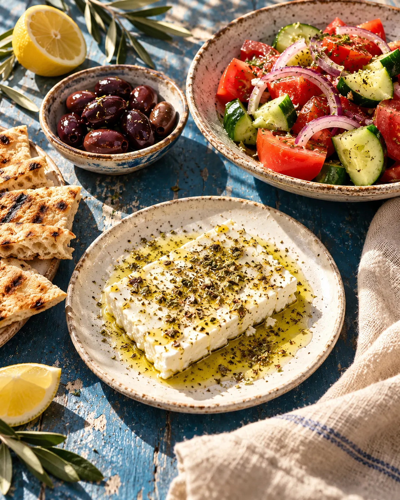
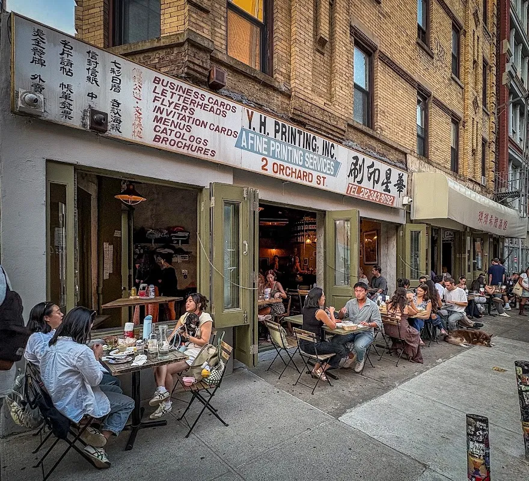

Come to
Kiki’s table
A restaurant in Manhattan. Explore a sample menu collection and ask Kiki’s about its actual dishes and current menu.
Explore the menu →130 Division St, New York, NY 10002

Start with something
Explore the menu studies by course. The restaurant confirms every actual dish, ingredient and portion.
To startExplore the sample collection, then ask the store about the current range and availability.
Explore to start →Demo selection. Confirm products, prices and availability with the store.
For the Kiki’s table
A sample menu made for browsing a dish closely, with its own description and place at the table.


Visit Kiki’s
Kiki's is at 130 Division St, New York, NY 10002. Explore the business photographs, then plan a visit or call to ask about the current selection.
Plan your visit →